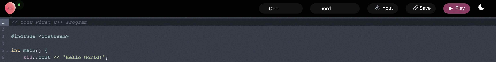
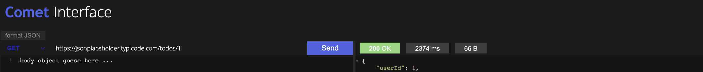
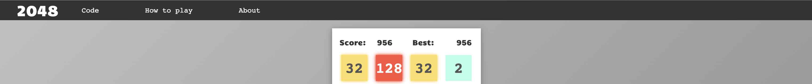

Pradeep Suthar
Software Engineer
#Projects
Most of my projects are here at my GitHub profile.
July 20, 2023Online IDE
August 1, 2021API REST Client
May 28, 2021Rcpp Coment Remover
May 2, 2021Minesweeper
June 15, 2021The 2048
March 25, 2021The K-ary Generic Heap
#Work Experience
Software Engineer @Upstox | July 2022 - Present
-
Created a collection of reusable and widely adopted generic code libraries, streamlining development across teams by
providing consistent and efficient solutions for common challenges.
-
Designed and develop a role based CMS for large JSON Object, including audit and logs tracking for mutual-funds and
ipo, that avoid friction among business, product and DBA team.
-
Consolidated several internal UI admin applications (MF, IPO, Gold Bond, Govt. Securities etc.) into one to reduce
cost, maintenance, and release efforts of 5 to 1 apps.
-
Led the seamless migration process of transitioning from Okta auth to Azure Active Directory auth.
-
Introduced Metaprogramming, that leveraged Higher-Order Components(HOCs) to dynamically inject components based on
context or data, enabling highly reusable and customisable, which streamlined UI development by abstracting common
patterns and promoting code reusability.
SDE Internship @Upstox | March - June 2022
-
Disturbed Legacy Monolith system to micro-services, rebuilding them from the ground up and optimising their
performance and securing functionality, worked on backend service of Govt. Securities that interact with exchange.
-
Solved critical issues and conduct root cause analysis in uncontrolled, unreproducible and unbalanced data
environment with strong time constraints.
-
Identified Concurrency and Synchronization challenges within legacy micro-services, devised a robust solution by
implementing locking mechanisms and the circuit breaker pattern, ensuring fault tolerance and reliability.
Android Internship @Blitzscale | Jul-Jan 2022
-
Learned and Applied android core concepts and patterns, including MVVM architecture, Jetpack compose etc.
-
Constructed Reusable Component B2C application, Maintaining the app by fixing bugs and improving app performance by
compressing image and video files while uploading.
#Art & Hobby
Sketching
My passion for sketching complements my technical skills by fostering creativity, attention to detail, and effective
visual communication in software design and development.
Skateboard
I honed my balance, coordination, perseverance, risk management, and creativity while learning to skateboard,
fostering community engagement and maintaining equilibrium even in challenging conditions.